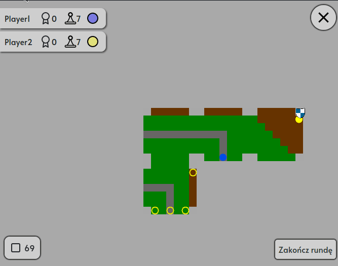
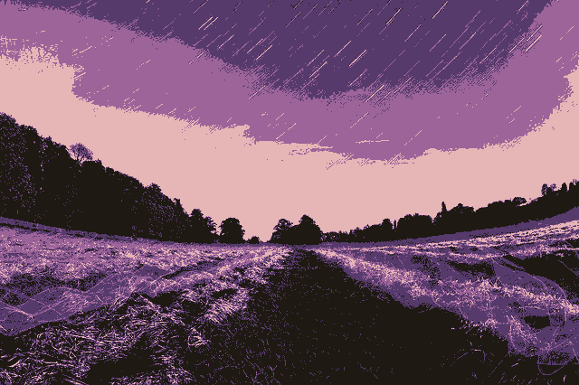

Jest to mój najnowszy projekt jednoosobowy. By zaliczyć przedmiot Języki Formalne i Teoria Translacji
musieliśmy napisać kompilator prostego jezyka podanego przez prowadzącego.
Niestety, ten projekt był wyjątkowo trudny do debuggowania z uwagi na to, że program zwracał
plik z kodem maszyny wirtualnej. Mój kompilator często nie zwracał błędu przy analizie kodu,
ale sam kod maszynowy źle się wykonywał. Parę asercji uratowało mnie przed długimi godzinami
szukania błędu. Na przykład pod koniec danalizy kodu odpalałem funkcję assertFreeRegisters()
która sprawdzała, czy zwolniłem wszystkie rejestry. To pozwoliło mi uniknąć sytuacji, gdy w pewnym
momencie nie zwalniam rejestru i przy długim kodzie źródlowym brakuje mi wolnych rejestrów.
Słynna planszowa gra Carcassone, którą napisaliśmy w sześcioosobowym zespole używając języków
Python oraz Javascript. Gra odbywa się na żywo, na wielu urządzeniach naraz, zatem trzeba
było przygotować odpowiednią komunikację.
Wpadliśmy na pomysł, by użyć dwóch poznanych nam wzorców projektowych: fabryki oraz komendy.
Każdy wątek (gracz) gdy tylko chciał nam wysłać informację (położenie ptytki, rezygnacja z gry),
musieliśmy odpowiedno zawiadomić pozostałych graczy. Udało mam się to zapewnić jedną funkcją:
async def analyze(self, data, websocket):
"""Gets json(data) from websocket,
Creates command for that data and executes it
sends back prepared inforamtion to all clients"""
command = self.factory.createCommand(
self.game, data, websocket)
sendBackJsonTab = (await command).execute()
for ws, messages in sendBackJsonTab.items():
for message in messages:
await ws.send(message)

Jakikolwiek input dostaniemy, wysyłamy go do fakbryki, która po analizie nagłówka zwróci nam
odpowiednią komendę, którą używamy poleceniem execute(). Następnie wysysłamy informację do
pozostałych zainteresowanych graczy.
Kodowanie i kompresja danych
Był to jeden z najtrudniejszych i zarazem najciekawszych kursów na studiach informatycznych.
Uczyliśmy się podstawowych technik kodowania danych w taki sposób, by zajmowały mniej miejsca
w pamięci komputera. Pisaliśmy kodowania bezstratne (np. słownikowe) oraz stratne
(np. zapisanie obrazka w rozrzeszeniu .tga o ograniczonej liczbie kolorów). Jednocześnie
poznałem lepiej język C++, w którym napisałem wszystkie programy z tego kursu.

Student helper
Aplikacja webowa pomagająca studentowi organizować czas poświęcony na studia, informująca
o zajęciach i innych obowiązkach. Tego nie da się opisać, to trzeba zobaczyć: